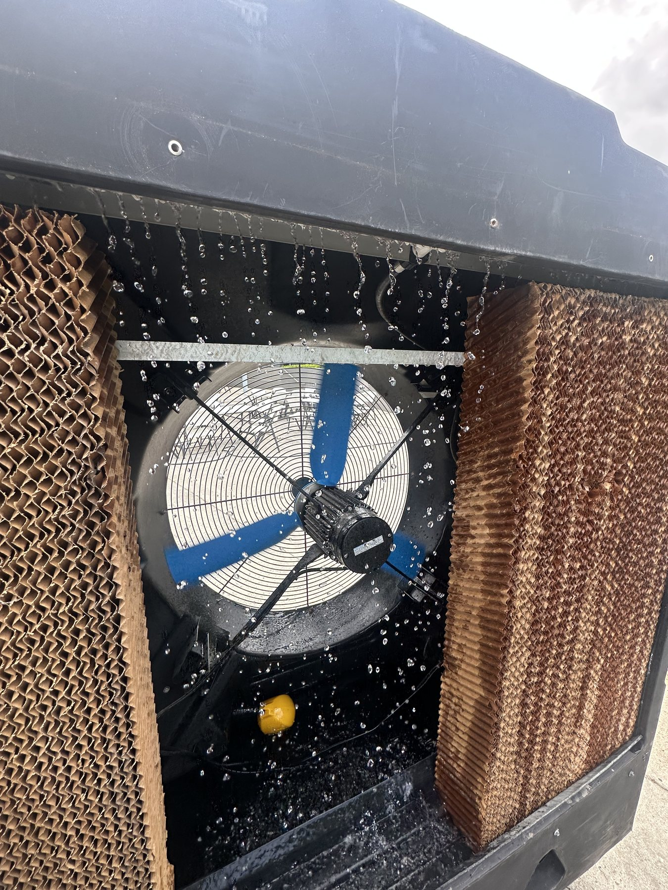
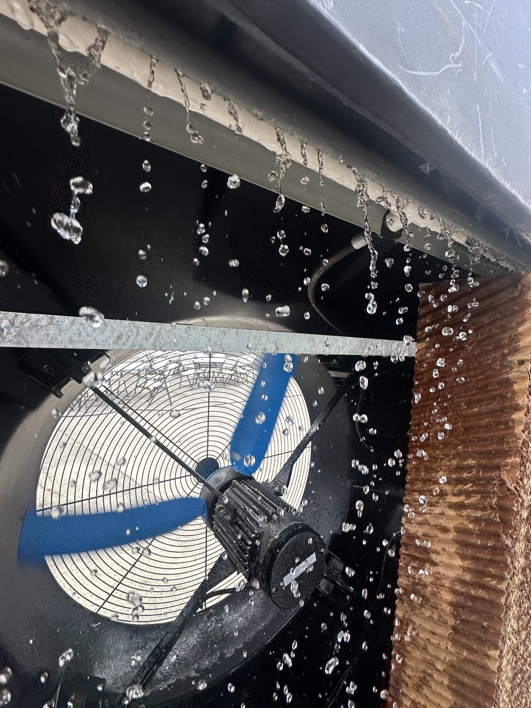
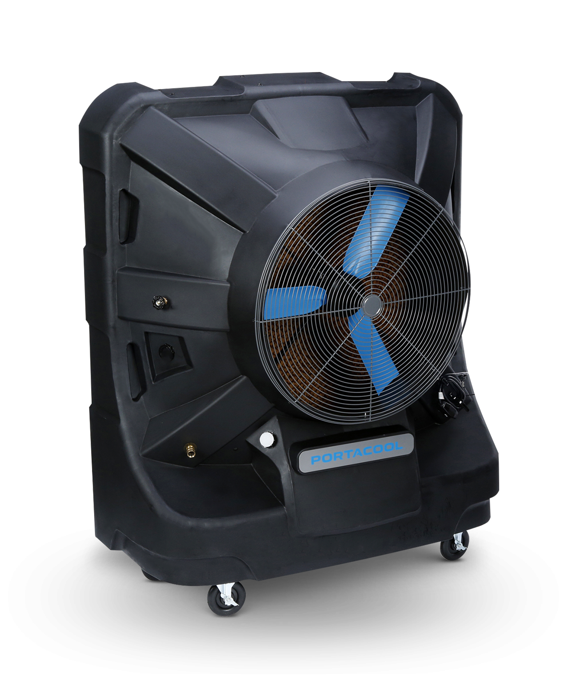
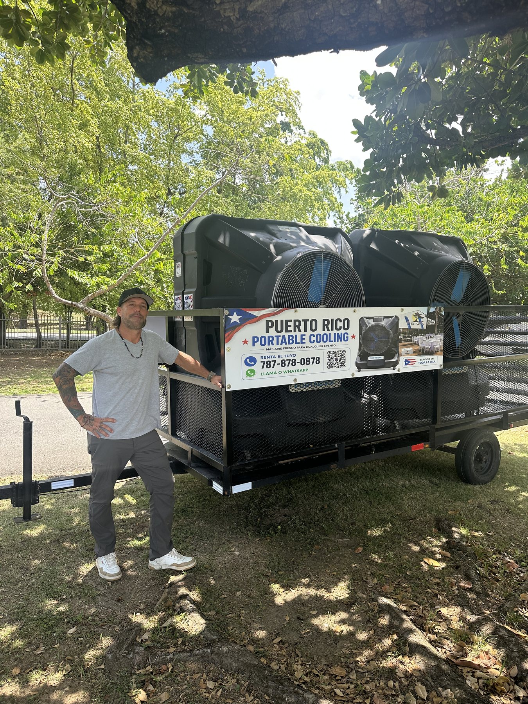
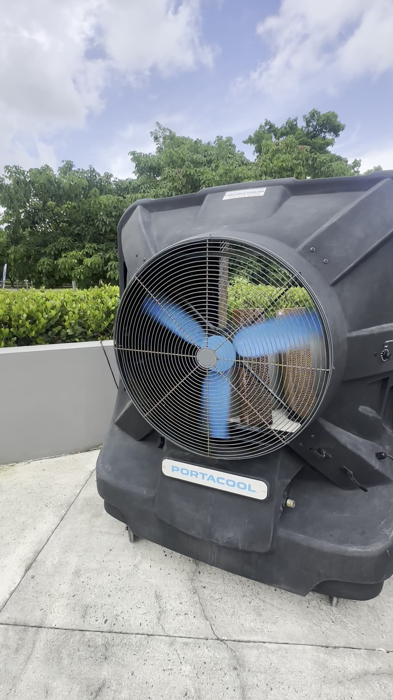

Alquiler de enfriadores para eventos en Puerto Rico
Renta aire fresco para tu próximo evento.
Ayudamos a event planners, coordinadores de bodas, productores y anfitriones a mantener más cómodos sus eventos, fiestas, cumpleaños, actividades corporativas y celebraciones al aire libre.
Cotización gratuita
Cuéntanos sobre tu evento.
Comparte cinco detalles y abriremos WhatsApp con tu solicitud lista para enviar. Te confirmamos precio y disponibilidad según la fecha y ubicación.
Míralo en acción
Enfriamiento listo para alquilar.
Conoce el equipo que podemos llevar a tu boda, festival, actividad corporativa o celebración. Reserva las unidades para la fecha de tu evento.
Cómo funciona
Agua + aire = enfriamiento natural
El agua circula sobre el medio evaporativo. El ventilador atrae aire caliente a través del material húmedo y lo impulsa más fresco hacia el área del evento.
- Se llenaEl depósito alimenta el sistema.
- Se evaporaEl aire pasa por el medio húmedo.
- Se distribuyeEl ventilador mueve aire fresco a gran volumen.



Alquila este equipo para tu evento
Portacool Jetstream 260
Renta potencia de enfriamiento para espacios medianos, carpas abiertas y áreas semiabiertas. Cada unidad ofrece 12,500 CFM y una capacidad publicada de hasta 3,125 pies cuadrados.
Ver detalles del alquiler →
Conoce al fundador
Jesús González
Desde Arecibo, Puerto Rico, Jesús vio una necesidad clara: eventos grandes necesitaban una forma más accesible y práctica de combatir el calor. Así nació Puerto Rico Portable Cooling, llevando enfriamiento a escala de evento a más celebraciones alrededor de la isla.
Servicio local. Equipo listo. Trato directo.
Trabajo real
Listos para mover aire

Reserva para tu próxima fecha
¿Planificando una boda, fiesta o gran evento?
Cuéntanos la fecha, el pueblo y el tipo de actividad para cotizar el alquiler adecuado.